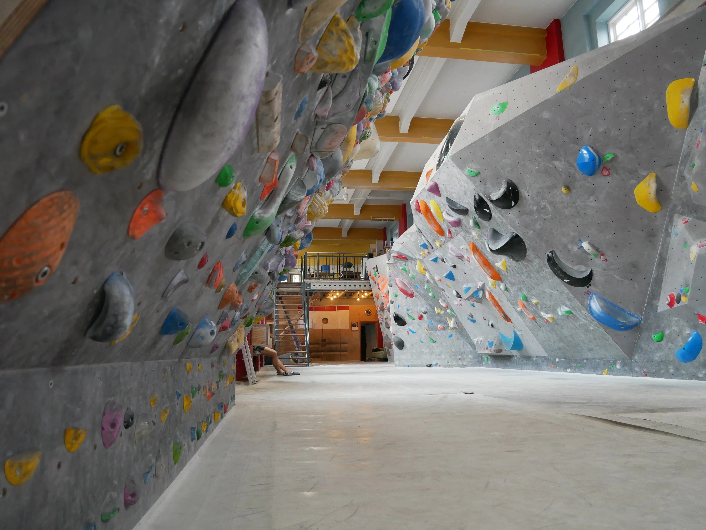
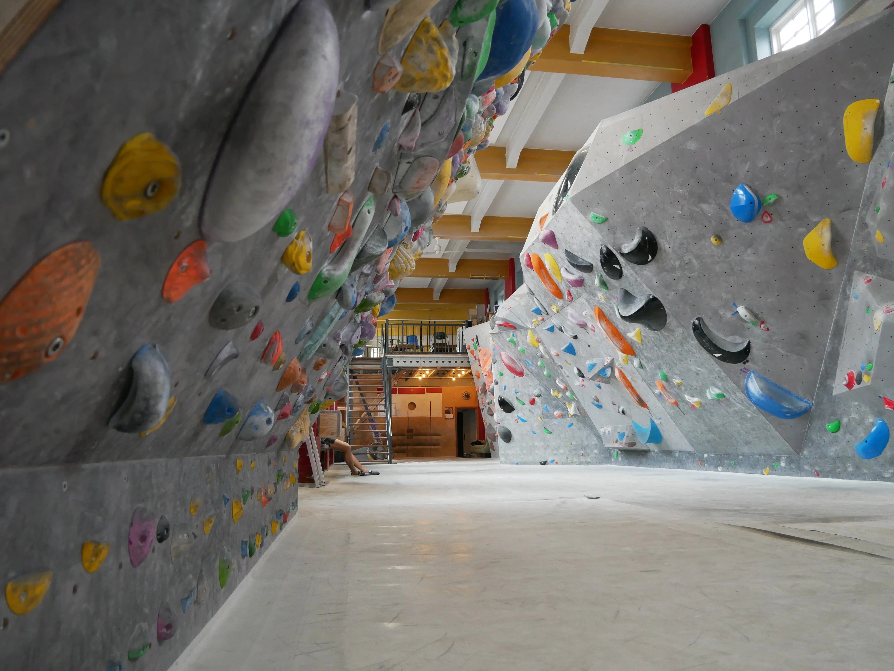

Opgaverne
-
I tema 5, fik vi til opgave at lave en video om en person, som havde en stor passion og efterfølgende lave et tilhørende pilotsite. Derefter skulle vi bruge de principper og færdigheder vi lærte fra pilotsite opgaven til at lave et redesign af en virksomheds hjemmeside. Her skulle vi lave et interview, klippe det i adobe premiere pro, samt anvende relevante metoder fra bl.a. tema 3 og 4.
Links:
Link til pilotsite: 05.01.02 Pilotsite
Link til redesign: 05.02.01 Redesign
 
